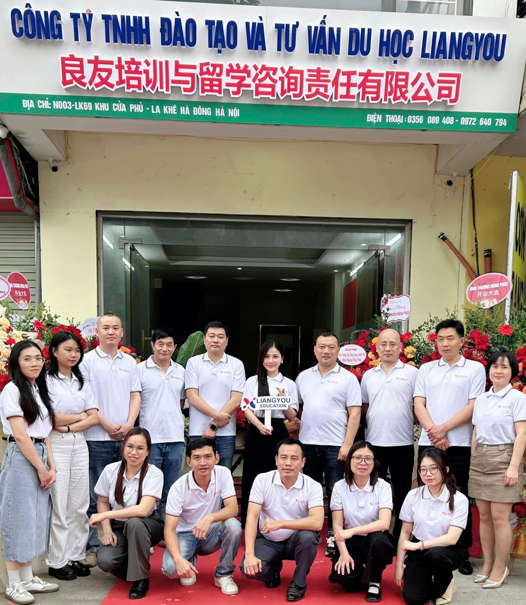

Tại Trung Tâm Liangyou, chúng tôi cung cấp các khóa học tiếng Trung từ cơ
bản đến nâng cao, phù hợp với mọi đối tượng học viên. Với phương pháp
giảng dạy hiện đại, các giáo viên giàu kinh nghiệm và nhiệt huyết, chúng
tôi cam kết giúp bạn nâng cao kỹ năng ngôn ngữ một cách nhanh chóng và
hiệu quả.
Các khóa học bao gồm:
Với đội ngũ tư vấn viên giàu kinh nghiệm, Trung Tâm Liangyou cung cấp dịch
vụ tư vấn du học Trung Quốc toàn diện. Từ việc lựa chọn trường học, ngành
học, làm hồ sơ xin visa, cho đến việc hỗ trợ sinh viên trong suốt quá
trình học tập tại Trung Quốc, chúng tôi luôn đồng hành và hỗ trợ bạn từng
bước để đảm bảo hành trình du học của bạn thành công.
Dịch vụ tư vấn du học của chúng tôi bao gồm:
Hãy đến với Trung Tâm Liangyou để bắt đầu hành trình học tiếng Trung và du học Trung Quốc ngay hôm nay!
